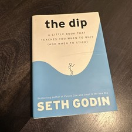

Why Did Air Deccan Fail?
The Airline That Made Flying Affordable — Then Flew Into the Ground
📜 What Happened
Captain G.R. Gopinath's Air Deccan was a genuine revolution: in 2003, he launched India's first low-cost airline, selling tickets at prices that let the 'common man' fly for the first time — famously selling some seats for ₹1. The airline grew explosively, forcing every legacy carrier to cut prices. But the model had a fatal gap: Air Deccan was a low-cost airline without the low-cost discipline — a mixed fleet, an early-morning flight schedule that hurt yields, and thin operating margins that left no room for error. When losses mounted and capital was needed, Gopinath sold a stake to Kingfisher's Vijay Mallya, who merged the airlines and eventually grounded the brand. The revolution survived; the company didn't.
☠️ The Fatal Mistake
Running a low-fare airline with high-cost operations — the fares were revolutionary, but the cost structure never matched them, so every flight subsidized a passenger the airline couldn't afford to carry.
🧠 The Lesson (Free for You)
A revolution in pricing is only a business if the costs match the promise. Air Deccan changed Indian aviation forever — and proved that changing the market is not the same as surviving it. The founder who creates a category must also build the cost machine that keeps him in it.
📕 The Antidote Book

'Never quit' is terrible advice. Godin's model: every pursuit follows one of three curves — the DIP (starts fun, gets brutally hard, then pays off enormously for those who push through: the artificial barrier that…
📖 OPEN THE FULL INTERACTIVE BREAKDOWN →Searchable, filterable, free forever — they paid billions; your lesson is free.